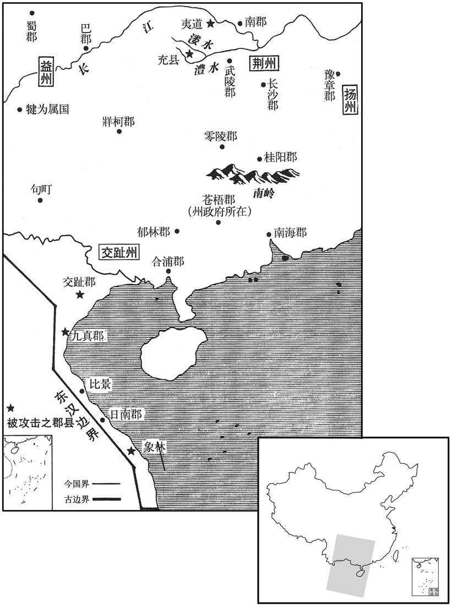

公元136年资治通鉴：本年记事、原文与白话对照
按原书编年位置阅读；追叙和史论不等于本年发生的事件。白话采用所据译本，缺译不以生成译文补齐。
卷52 · 本年记事
公元136年 · 汉孝顺皇帝永和元年
永和元年〔（丙子、一三六）〕
春，正月，己巳，改元，赦天下。
春季，正月己巳（十五日），改年号。大赦天下。
冬，十月，丁亥，承福殿火。
冬季，十月丁亥（初七），承福殿发生火灾。
十一月，丙子，太尉庞参罢。
十一月丙子（二十七日），太尉庞参被免职。
十二月，象林蛮夷反。〔象林县，属日南郡。晋、宋以下为林邑国。〕
十二月，象林县蛮夷起兵反叛。
乙巳，以前司空王龚为太尉。
龚疾宦官专权，上书极言其状。诸黄门使客诬奏龚罪；上命龚亟自实。李固奏记于梁商曰：「王公以坚贞之操，横为谗佞所构，〔横，户孟翻。〕众人闻知，莫不叹栗。夫三公尊重，无诣理诉冤之义，〔哀帝时，丞相王嘉召诣廷尉，主簿曰：「将相不对理陈冤，相踵以为故事，君侯宜引决。」〕纤微感慨，辄引分决，是以旧典不有大罪，不至重问。〔贤曰：大臣狱重，故曰重问。成帝时，丞相薛宣、御史大夫翟方进有罪，上使五二千石杂问。音义云：大臣狱重，故以二千石五人同问之。〕王公卒有他变，〔卒，读曰猝。〕则朝廷获害贤之名，群臣无救护之节矣！语曰：『善人在患，饥不及餐。』〔言当速救之也。〕斯其时也！」商即言之于帝，事乃得释。
乙巳（二十六日），任命前任司空王龚为太尉。王龚痛恨宦官专权，上书极力陈述他们的罪状。黄门宦官们指使门客，向朝廷诬告王龚有罪。顺帝命王龚及早亲自讲明真实情况。李固向梁商上书说：“王龚具有坚贞的节操，无端遭受奸佞的陷害，大家听说这个消息，无不为之叹息恐惧。以三公的尊严地位，没有前往司法部门为自己申辩诉冤的道理。即令他对朝廷稍有不满，往往让他自杀，所以，按照惯例，没有大逆不道之罪，不至于审问三公。假如王龚突然发生其他意外，则朝廷就会蒙受谋害贤能的恶名，群臣就没有营救和保护忠良的气节了！俗话说：‘好人正处在患难之中，我们即使再饿，也顾不上吃饭。’这正是救人的时候。”于是，梁商立即向顺帝进言，事情才告平息。
是岁，以执金吾梁冀为河南尹。冀性嗜酒，逸游自恣，居职多纵暴非法。父商所亲客雒阳令吕放以告商，商以让冀。冀遣人于道刺杀放，〔刺，七亦翻。〕而恐商知之，乃推疑放之怨仇，〔推，吐雷翻。恶自冀出，欲嫁之他人，故托其辞，疑放之怨仇为之。〕请以放弟禹为雒阳令，使捕之；〔贤曰：安慰放家，欲以灭口。余谓贤说非也。冀请于商，以放弟为令，谓必急于捕贼，而阴使禹灭其兄之宗亲宾客以快己忿耳。〕尽灭其宗、亲、宾客百余人。
本年，任命执金吾梁冀为河南尹。梁冀生性喜好饮酒，纵情作乐，为所欲为，居官多有暴虐不法的行为。其父梁商所亲信的门客、洛阳县令吕放，将上述情况报告梁商，梁商因此责备了梁冀。梁冀怀恨在心，竟派人在道路上刺死了吕放。而他又恐怕被父亲发觉，于是把罪行推到吕放的仇人身上，并请求任命吕放的弟弟吕禹为洛阳县令，让他来逮捕刺杀吕放的凶手。结果，吕禹将吕放的宗族、亲戚和宾客等一百余人全部诛杀。
武陵太守上书，以蛮痍率服，〔言相率而来服。〕可比汉人，增其租赋。议者皆以为可。尚书令虞诩曰：「自古圣王，不臣异俗。先帝旧典，贡赋多少，所由来久矣；〔汉兴，令武陵诸蛮，大人岁输布一匹，小口二丈，是谓之賨布。〕今猥增之，必有怨叛。计其所得，不偿所费，必有后悔。」帝不从。澧中、溇中蛮各争贡布非旧约，〔溇，郎侯翻。〕遂杀乡吏，举种反。〔种，章勇翻。〕
武陵郡太守向朝廷上书，认为武陵郡内的蛮夷已归服了汉朝，可以比照汉人，增加他们的田租和赋税。参加集议论的人都认为可行，但尚书令虞诩却说：“自古以来，圣明的君王对风俗习惯跟我们不同的民族，不当作自己的臣民。先帝已制定了规章，明确规定武陵蛮夷应缴纳的赋税额，时间已经很久了。而今滥行增加，必然引起他们的怨恨和反叛，计算所能得到的，抵偿不了所耗费的，定会后悔。”顺帝没有采纳。其后，中和中蛮人各因所征收的贡布不是原来规定的数量而起来抗争，于是杀掉征收赋税的乡吏，全族反叛。
